Log
Web Standards
Web standards were defined by the W3C, which is an “international community where Member organizations, a full-time staff, and the public work together to develop Web standards.” (W3C, 2017). They (W3C, 2017) state that their standards define an Open Web Platform, which allows developers to create complex websites that are available on any device. The main idea behind web standards is to keep web development, which is a huge community from all over the world, writing similar code that can be supported by as many browsers and devices as possible without having unique closed standards that only specific devices or browsers can use.
The benefits of this are simple, one person is able to write as little code as possible and have it be able to run on a huge range of devices with as little extra work as possible to achieve this goal. A good example of this would be, if a developer had to write an entire new website just to view a webpage in Firefox, or if the developer just had to add in a few more lines into a CSS file. This is the greatest strength of web standards. But not only does it keep web pages compatible with each other, but also any other web related formats such as HTTPS encryption, XML etc.
However, there are a few weaknesses to this, older browsers, or even older machines which do not support the latest browsers are not able to properly get the same experience that others who use devices that are compatible with the latest standard. This could mean that old machines become useless at certain tasks, for example if you used a machine for shopping, but all shopping websites required html5 and your device was limited to html 4, this could cause serious issue or stop the user being able to use the site completely. There are also issues when it comes to the later standards such as HTML 5, where you can begin to see the issues of what web standards are. Web standards are supposed to be guides improve your coding, this means each iteration they are getting stricter and stricter, this means that code is flagged much more often with warnings for example not including a header tag inside an <article>, this is flagged as wrong, whereas for many people, it is exactly what they meant to do and they do not require a header tag.
Techniques Used
Various techniques were used during the development of the site, these include: JavaScript, jQuery, CSS 3 and HTML 5. These were all used together to create a dynamic and interesting site. JavaScript and jQuery were both used to add a scrolling affect to the site whenever an anchor button was pressed, and also an affect that made context fade in and out when going on or off of the page. JavaScript and jQuery were both used to add text affects to titles to add a more dynamic user experience. However, all four of these different languages were used together to make an interactive customizer which reacts to both user input as well as the device, such as screen size and using the devices local storage.
Challenges Presented
There were many challenges presented during the development of the website, especially during the development of the canvas element. One major challenge that presented itself was getting the image on the canvas to a type that would be stored in local storage, and then converted back to be loaded again. The canvas also presented issues with drawing at the correct location caused by both the offset of the canvas and how far the page has been scrolled, however this was simple to fix once the issue had been found. There were many issues when it came to getting the page presentable on mobile versions, however it ended up being that at when it detects a mobile device the text will become smaller and the menu bar will change to a button.
Interoperability
The website has been designed around the browsers: Edge, Opera, Firefox, Chrome, and Yandex, these cover a large range of the market and ensuring that the site works for as many people as possible is one of the most important parts of web development. These browsers have all been tested for issues with any of the websites features and have all passed these tests. The site has also been tested on mobile and it is still usable however, on some devices they are not able to interact with the canvas, however this is not a site breaking issue as compatibility with all mobile devices is nearly impossible and should be expected with interactive elements.
Website
https://callyyllac.github.io/W3C HTML and CSS Validation
index.html
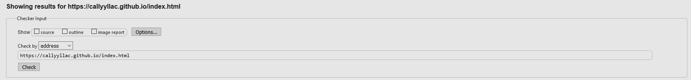
1 bad value error
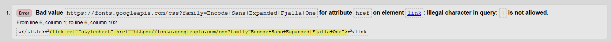
5 js type warnings
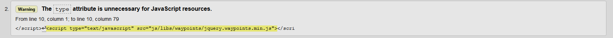
3 section heading warnings
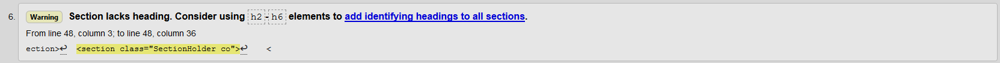
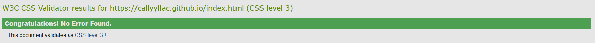
portfolio.html
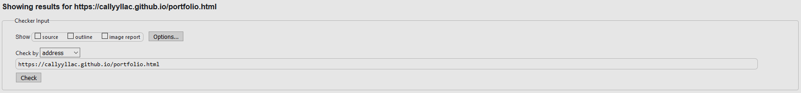
1 bad value error
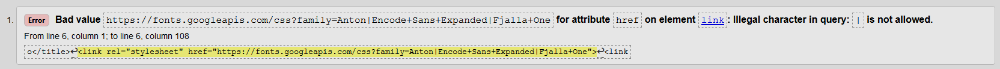
6 js type warnings
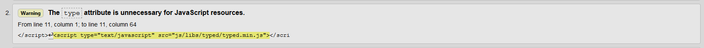
5 name warnings
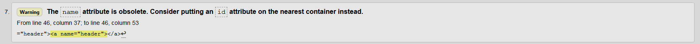
4 section heading warnings
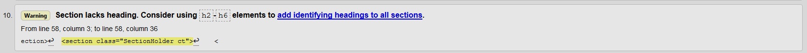
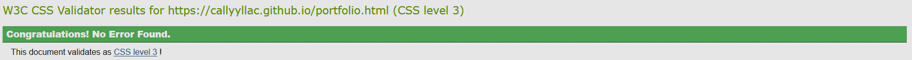
Cshp.html
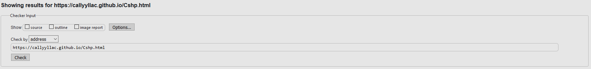
1 bad value error
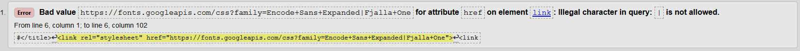
5 js type warnings
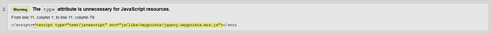
7 section heading warnings
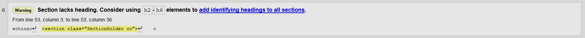
6 article heading warnings
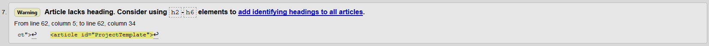
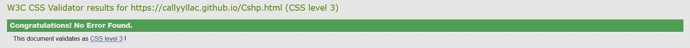
Web.html
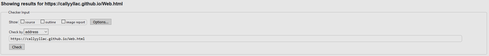
1 bad value error
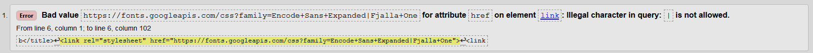
5 js type warnings
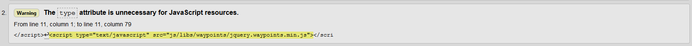
4 section heading warnings
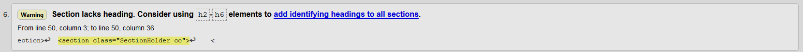
3 article heading warnings
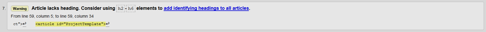
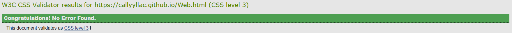
Python.html
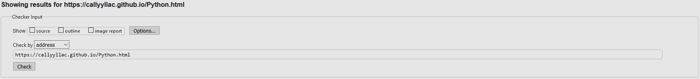
1 bad value error
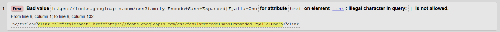
5 js type warnings
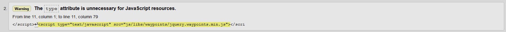
3 section heading warnings
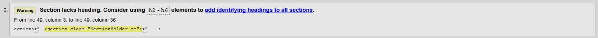
2 article heading warnings
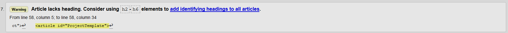
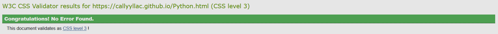
Coffee.html
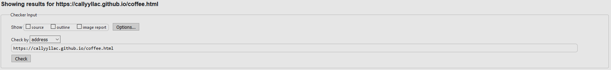
1 bad value error
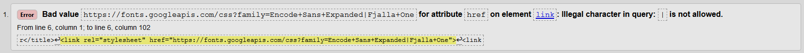
5 js type warnings
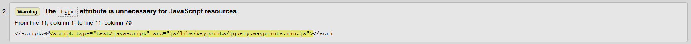
3 section heading warnings
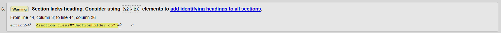
2 color type warning
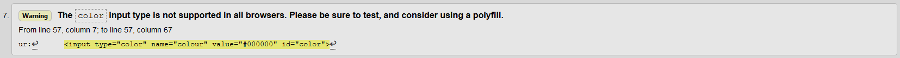
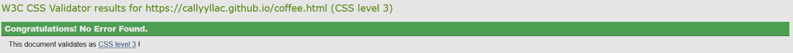
Conclusion
The errors that were flagged by the W3C seem to have no affect as it its an import of a google font, this font works perfectly fine on all of the browsers that have been tested so far.
The warning flags too were more about advice and good practice and showed no issue with the site and its usability.
References
W3C (2017) W3C Standards. Available at: https://www.w3.org/standards/ (accessed 8 January 2018)
W3C (2017) About W3C. Available at: https://www.w3.org/Consortium/ (accessed 8 January 2018)